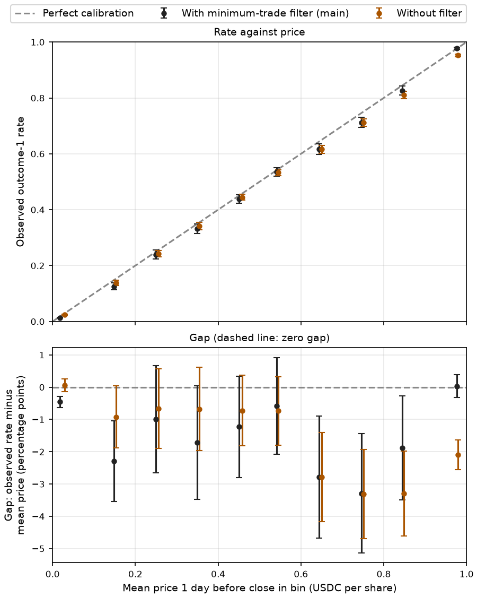
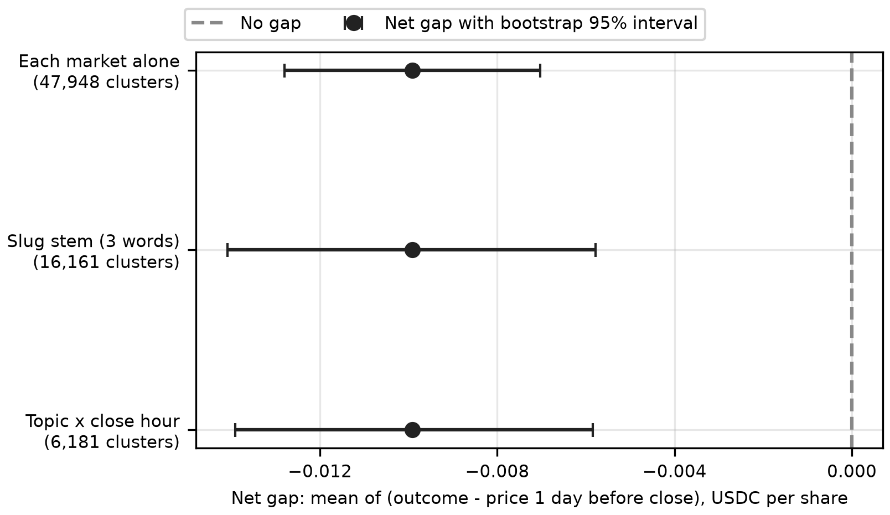
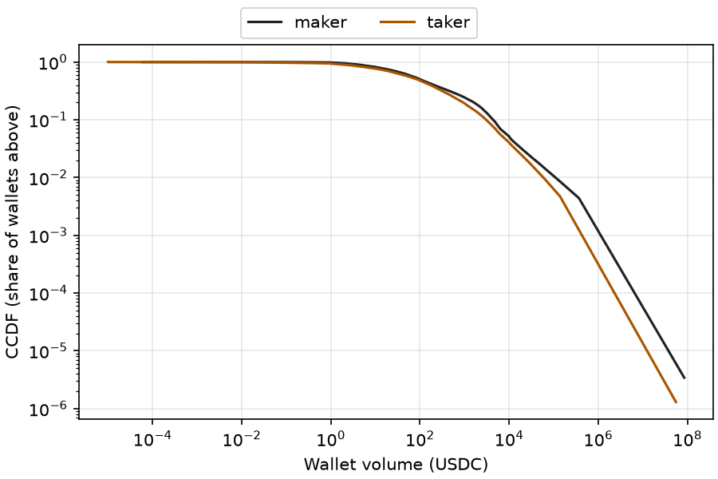
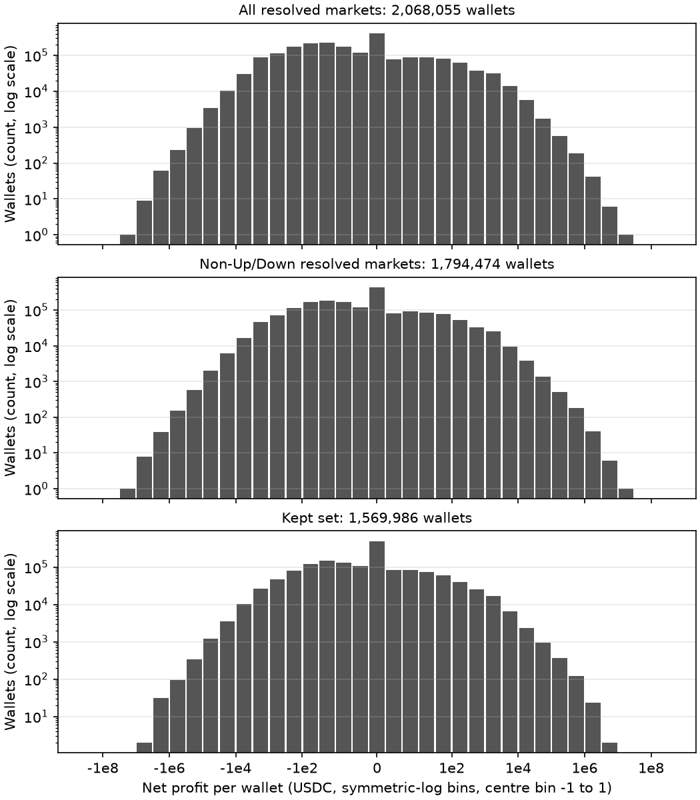
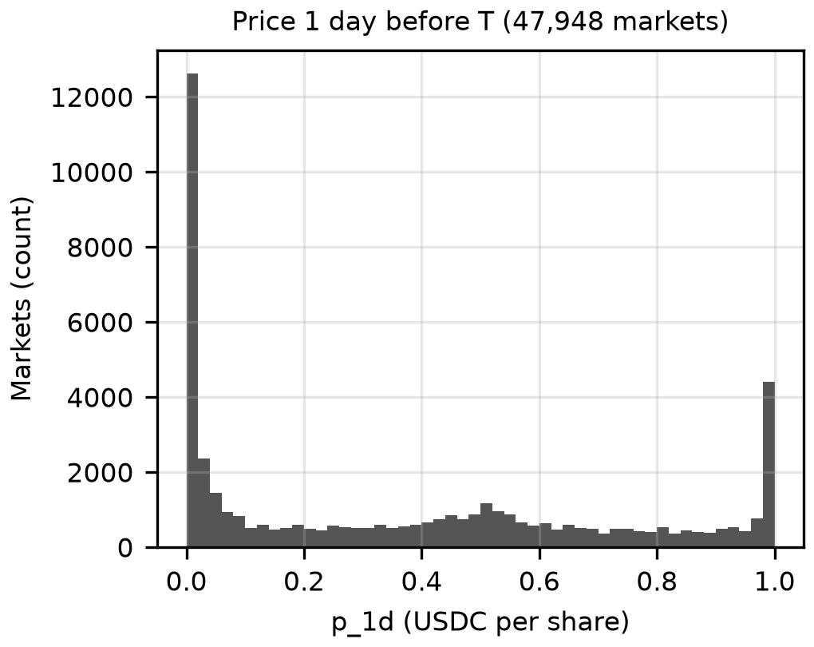

Prediction Markets: When the Price Says 70%, Does It Happen 70% of the Time?
Group 1 · Team PolyHindSight
Taek Lim · Zhugang Liu (Tony) · Francisco Cortez
CS 6344 Introduction to Data Science The University of Texas Rio Grande Valley (UTRGV)
Colors: Okabe-Ito palette, safe for color-blind viewers
Notes: Speaker 1 (Taek Lim). About 20 seconds. Good morning. We are Group 1, Team PolyHindSight. Our topic is prediction markets. Our question is simple: when a market shows a price of 70%, does that event happen about 70% of the time? We answer it on real trade data, and each of us will present one of our three research questions.
What is a prediction market?
A question
Will it rain on Sunday? Yes or no.
→
$1
A YES share
Pays $1 if the answer is yes, $0 if not.
→
70¢
The price
Set by people trading. Read as a 70% chance.
Kalshi
A US exchange regulated by the Commodity Futures Trading Commission (CFTC). Trades in US dollars.
$23.8B traded in 2025
About 3× the Powerball + Mega Millions ticket sales (~$8B, FY2025).
Polymarket
A crypto-based exchange. Trades in USDC, a dollar-pegged token. Our data come from Polymarket.
Top row: illustrative values. Volume counts each contract at $1 (KalshiData); lottery: NASPL
Notes: Speaker 1 (Taek Lim). About 45 seconds. Why: some of you may not know what a prediction market is, so we start there. How: a prediction market asks a yes-or-no question, for example, will it rain on Sunday. You can buy a YES share. It pays one dollar if the answer is yes and nothing if not. People trade these shares, and the price moves. If a YES share costs 70 cents, people read that as a 70% chance. The values on this slide are only an example. Result: the two biggest markets in the US are Kalshi, a US exchange regulated by the Commodity Futures Trading Commission, and Polymarket, a crypto-based exchange that trades in USDC, a dollar-pegged token. To give a sense of size: Kalshi traded 23.8 billion dollars in 2025. That is about three times the ticket sales of Powerball and Mega Millions together, about 8 billion dollars in the last fiscal year. One caution: trading volume counts each contract at one dollar, and the same money can trade many times, so this is a rough sense of size, not an exact comparison. Meaning: our data come from Polymarket.
Kalshi recap, Nov 4, 2026, via CryptoSlate. Notional volume.
Accuracy
98.4%
of Polymarket’s favorites won in resolved 2026 midterm markets, priced the day before the vote.
Polymarket on X, via Odaily and The Hill. Self-reported.
Readers
5 : 1
people only watching the odds vs people trading, on Kalshi’s midterm markets.
Kalshi, Oct 2026, via CryptoSlate. Self-reported.
But is a 70% price really a 70% chance?
News only. These markets are not in our data
Notes: Speaker 1 (Taek Lim). About 45 seconds. Prediction markets are now part of how people follow elections. Three numbers from the news, each with its source on the slide. Money: Kalshi says its election trading grew from 1.3 billion dollars in 2024 to more than 2.5 billion for the 2026 midterms. Accuracy: Polymarket says 98.4% of its favorites won. Readers: Kalshi says people who only watched the odds outnumbered traders five to one. The last two are the companies' own numbers. So many people now read these prices like polls. But is a 70% price really a 70% chance? These markets are not in our data.
Notes: Speaker 1 (Taek Lim). About 15 seconds. A quick question for you. Would anyone here bet real money on whether aliens exist? It sounds like a joke, but people really do. Let me show you.
People bet real money on what they believe
$44.4M
traded on one question: will the U.S. confirm that aliens exist?
15%
the crowd’s chance it happens before Jan 20, 2029
So a price shows what other people believe. Can we trust it as a chance?
Source: Kalshi, screenshot, Nov 2026. Not in our data
Notes: Speaker 1 (Taek Lim). About 45 seconds. Why: we want to show how people use these markets. How: this is a real Kalshi market from November 2026. The question is: will the U.S. confirm that aliens exist? Result: more than 44 million dollars have been traded on this one question. The price for "before January 20, 2029" is 15%. That means the crowd thinks it happens about one time in seven. Meaning: a price shows us what other people believe, and they back it with money. So the next question is: can we trust a price like this as a real chance? This market is not in our data. We use it only as an example.
98.4% right does not tell us if the price was right
Same 98.4% of favorites winning, three different prices:
Favorites priced at
Favorites won
The price was
65%
98.4%
too low
98%
98.4%
right
99.9%
98.4%
too high
So we group markets by price and check: do markets priced at 70% happen 70% of the time? That is Q1.
Illustrative values
Notes: Speaker 1 (Taek Lim). About 30 seconds. 98.4% right only tells us the favorite won. It does not tell us if the price was right. Look at the table, with illustrative values. If the favorites were priced at 65% and still won 98.4% of the time, the price was too low. At 98%, the price was right. At 99.9%, it was too high. Same hit rate, three different answers. So we group markets by price and check whether markets priced at 70% really happen 70% of the time. That is our first question.
WhyHowResultMeaning
One question, three ways to look at it
70¢ → is it really a 70% chance?
Q1 Is the crowd right?
Does 70¢ happen 70% of the time?
Q2 Who is the crowd?
Do a few wallets hold most of the money?
Q3 What does betting look like?
Which summary number is honest?
Sketches show shapes only, not our data. Source: README section 1, paper Section 1
Notes: Speaker 1 (Taek Lim). About 45 seconds. Why: the hook gave us one question. If a share costs 70 cents, is it really a 70% chance? We look at it in three ways. Click. Q1 asks whether the crowd is right. In this sketch the dots sit just under the line where price equals how often things happen. That is the test: do events priced at 70% happen about 70% of the time? Click. Q2 asks who the crowd is. Does a small group of wallets hold most of the money? If so, the price may reflect a few traders, but volume is not price-setting power. Click. Q3 asks what betting looks like. When sizes have a long right tail, the mean moves far from the median, so we must pick the honest summary number. These sketches show shapes only. The real results come next.
WhyHowResultMeaning
Data: we keep 47,948 Polymarket markets for all three questions
Polymarket-v1: 1.2 billion trades, 1.3 million markets, Nov 2022 to Apr 2026. In scope: standard yes/no markets.
We fixed these rules before any Q1 result. All three questions use the same 47,948 markets.
Source: paper, Data section; Qin and Yang 2026 (Polymarket-v1)
Notes: Speaker 1 (Taek Lim). About 1 minute. Why: to test a price, each market needs a clear answer, a price one day before the close, and a crowd behind that price. Each rule removes markets that miss one of these. How: we use Polymarket-v1, a public database of 1.2 billion trades and 1.3 million markets from November 2022 to April 2026. In scope are 688,131 standard yes/no markets. Each arrow shows what one rule removes from the bar above it. First, 255,420 Up/Down markets. The dataset paper says they settle a different way, so we do not mix them in. Next, 62,718 with no clear winner, so there is no outcome to compare. Next, 215,289 with no price one day before the close. A later price can already contain the answer, so without that price there is nothing to test. Next, 80,230 whose price is older than 24 hours, so it misses the news since then. Last, 26,526 with fewer than 10 trades. Their price comes from one or two people, not a crowd. We fixed these rules before we saw any Q1 result. Result: 47,948 markets are left, 7.0% of the scope. Meaning: all three questions use the same 47,948 markets, so the three answers fit together. The results hold for markets that pass these filters.
Q1 Calibration·Q2 Wallets·Q3 Distributions
WhyHowResultMeaning
Q1: bin the prices, compare, then test
1 Bin by price
47,948 markets into 10 price bins.
2 Compare
The 70 to 80% bin as 100 markets: price says 75, 71 happened.
● happened · ○ priced, missing
Real: 1,716 expected, 1,640 seen.
3 Test all bins
Chi-square, 10 degrees of freedom.
68.0 is far past the 5% line 18.3.
4 Test each bin
Binomial test, 70 to 80% bin: p = 0.00036.
BH correction: 5 of 10 bins off.
Panels 1 and 2: dots scaled. Source: paper Section 4.2, Table 1
Notes: Speaker 2 (Q1). About 1 minute 15 seconds. Four steps, one per click. Step 1: we drop all 47,948 markets into 10 bins by price, from 0 to 1. Each dot is about a thousand markets. Most markets sit in the cheapest bin. Click. Step 2: we compare the price with what happened. Take the 70 to 80% bin and shrink it to 100 markets. The price says about 75 should happen. Only 71 did. The four orange circles are the missing ones. In real numbers, we expected 1,716 and saw 1,640. Click. Step 3: one chi-square test adds up the misses of all 10 bins. If prices were right, the value would sit near 10, and 18.3 is the 5% line. Ours is 68.0, far off the chart. So prices are not calibrated as a whole. Click. Step 4: a binomial test in each bin says where. For bin 7, seeing 1,640 when we expect 1,716 has a chance of only 0.00036. Ten tests need a correction, so we use Benjamini-Hochberg, and 5 of 10 bins are off. We fixed these rules before we saw any result.
Q1 Calibration·Q2 Wallets·Q3 Distributions
WhyHowResultMeaning
Q1 result: prices are not calibrated as a whole
Chi-square goodness of fit on 10 price bins: the prices do not match what happened.
χ² = 68.0
10 degrees of freedom, 47,948 markets
p = 1.1×10⁻¹⁰
assumes independent markets, so it may be too small
9 of 10 bins below 0

Source: paper Section 5.1
Notes: Speaker: Q1 speaker. About 1 minute 15 seconds. Why: this is the test we fixed before the results, so its answer is the Q1 verdict. How: it compares the observed counts in the 10 bins with the counts the prices predict. Result: the chi-square statistic is 68.0 with 10 degrees of freedom, and p is about 1.1 times ten to the minus ten. The verdict is that prices are not calibrated as a whole. The chart shows the gap in each bin, the observed rate minus the mean price. Nine of the ten bars are below zero. The p-value assumes independent markets, so it may be too small. Meaning: the prices do not match what happened, and the next slide shows how and by how much.
Q1 Calibration·Q2 Wallets·Q3 Distributions
WhyHowResultMeaning
In 9 of 10 bins, events happen less often than the price says
−0.99%
net gap over all 47,948 markets: small but one way
74.6% vs 71.3%
70 to 80% bin: priced vs observed
Points below the diagonal: priced too high
Source: paper Section 5.1
Notes: Speaker: Q1 speaker. About 1 minute 15 seconds. Why: a verdict of not calibrated does not say which way the prices miss, so we read the bins. How: the chart plots the observed rate against the mean price in each bin. A point on the diagonal would be perfect. Result: in nine of the ten bins the observed rate is below the mean price. Only the top bin, from 90 to 100%, is not. Over all 47,948 markets the net gap is minus 0.99%. The biggest gap is in the 70 to 80% bin, where the price is 74.6% and the observed rate is 71.3%. Meaning: the effect is small, but it runs in one direction. Outcome 1 is priced a little too high.
Q1 Calibration·Q2 Wallets·Q3 Distributions
WhyHowResultMeaning
Six checks later, the Q1 gap is still there
Why: reviewers asked if our choices create the gap.
Check
Key number
M1 Price rule
net gap −1.20%
M2 Yes/No labels
net gap −1.32%
M3 Event proxies
interval [−1.41%, −0.58%]
M4 Kept vs dropped
median volume 1,790 vs 69 USDC
M5 Practical size
largest gap 2.22%, line 1.57%
R2 Last price before close
χ² 53.6, still rejects; net gap −0.65%
Original net gap: −0.99%.
M3: the whole interval stays below 0

Source: paper Section 5.4, Appendix G
Notes: Speaker: Q1 speaker. About 1 minute 15 seconds. Why: reviewers asked whether our choices create the gap, so we ran five checks. How: each new row sits next to the original Q1 result and does not replace it. Result: changing the price rule gives a net gap of minus 1.20%. Looking only at Yes/No markets gives minus 1.32%. The key one is M3. Markets on one event move together, so we group them with proxy keys, and the cluster bootstrap interval from minus 1.41% to minus 0.58% still lies below zero. M4 and M5 describe the kept markets and the size of the gap. Last, R2 uses the last price before the close instead of the price one day before. The chi-square is 53.6 and still rejects, and the net gap shrinks to minus 0.65%. So the last day of news explains part of the gap, not all of it. Meaning: the gap does not come from one choice we made. Two backup slides show M1, M2 and M4 in more detail.
Q1 Calibration·Q2 Wallets·Q3 Distributions
WhyHowResultMeaning
Q1 meaning: prices run a little high, in one direction
What for
χ² says the prices miss. The bin tests ask where, and which way.
Result
9 of 10 bins below the price. Bonferroni keeps 4 bins, BH keeps 5, all below. Largest gap 3.29 points: priced 74.6%, happened 71.3%.
Meaning
Outcome 1 (mostly Yes) is priced a little high at almost every price. Only the cheapest bins match the favorite-longshot bias. We do not test why.
Why it matters
Right 83.4% of the time is not calibrated. Read a price as a probability, a little lower.
Dots: gap (rate − price) per bin. Dashed: favorite-longshot shape only. Source: paper Section 5.1; run 142082
Notes: Speaker: Q1 speaker. About 1 minute 15 seconds. What for: the chi-square test said the prices miss, 68.0 against a cut of 18.3. But it does not say where or which way, so we tested each bin. Result: 9 of 10 bins are below the price. After correcting for ten tests, Bonferroni keeps 4 bins and Benjamini-Hochberg keeps 5, and all of them are below the price. The largest gap is in the 70 to 80% bin: prices average 74.6%, but 71.3% of those events happen. Meaning: outcome 1, which is mostly Yes, is priced a little high at almost every price. In horse racing there is the favorite-longshot bias: cheap bets win less often than priced, and favorites win more often. The dashed line shows that shape. Only our two cheapest bins match it. At high prices our gaps are also below zero, the opposite of that bias. So our pattern is a small shift down almost everywhere. We do not test why. Why it matters: a market can be right 83.4% of the time and still not be calibrated. You can read a Polymarket price as a probability, but read it a little lower.
Q1 Calibration·Q2 Wallets·Q3 Distributions
WhyHowResultMeaning
The top 20% of wallets hold 98.9% of maker volume
CCDF: the tail bends down

Far below equality
Why: a price is the crowd’s price. Who is the crowd?
98.9%
makers, top 20% of wallets
98.0%
takers, top 20% of wallets
Share of USDC volume. The 80/20 rule predicts 80.0%. Top 1%: 86.1% and 75.9%.
Source: paper Section 5.2
Notes: Speaker 3 (Q2, Q3). About 1 minute 15 seconds. Why: a price is the crowd's price, so we ask who the crowd is, and how far volume is concentrated compared with a familiar reference. How: we rank wallets by USDC volume, makers and takers apart, and read the share held by the top 20% and top 1%. The left chart is the CCDF and the middle chart is the Lorenz curve. Result: the top 20% of wallets hold 98.9% of maker volume and 98.0% of taker volume. The 80/20 rule would predict 80.0%. The top 1% alone hold 86.1% of maker volume and 75.9% of taker volume. In the CCDF the tail bends downward, so it is not a straight line. The Lorenz curve sits far below the equality line. Meaning: this far exceeds the 80/20 rule. We describe it without a pre-registered verdict.
Q1 Calibration·Q2 Wallets·Q3 Distributions
WhyHowResultMeaning
Makers and takers, side by side
t = 117.1
Welch t-test on log volume (p below 10⁻³⁰⁰)
0.219
mean log10 volume: makers 2.104, takers 1.885
D = 0.057
Kolmogorov-Smirnov (KS) statistic
ρ = 0.655
Spearman: trade count and volume
Color: top 20%. Gray: bottom 80%
Source: paper Section 5.2, Appendix D
Notes: Speaker: Q2 speaker. About 1 minute 30 seconds. Why: the crowd has two roles, makers and takers, so we check whether they differ. How: we compare log volume with a Welch t-test and a KS test, and we correlate trade count with volume using Spearman. The figure shows, for each role, the wallet distribution, the volume distribution and the Lorenz curve, with the top 20% in color. Result: the Welch t statistic is 117.1. The difference in mean log10 volume is 0.219, makers 2.104 and takers 1.885. The KS statistic is 0.057, and the Spearman correlation between trade count and volume is 0.655. Mean volume sits far above median volume in both roles. Makers have 14,103 against a median of 101.2 USDC, and takers have 5,339 against 86.6. Meaning: both roles are strongly skewed, and the volume sits with a few wallets in each. The Welch p-value is a float-underflow bound, not an exact value.
Q1 Calibration·Q2 Wallets·Q3 Distributions
WhyHowResultMeaning
Winnings sit with a few wallets, like volume
$389.8M
won = lost before fees: the markets are zero-sum
−$0.20
median wallet net profit (871,667 lose, 663,072 win)
~88.0%
of all winnings go to the top 1% of wallets (estimate)
Top 1% of makers hold 86.1% of maker volume. Kept markets, 1,569,986 wallets. Descriptive, no verdict.
Bottom panel: kept markets

Source: paper Section 5.2, Appendix D.3
Notes: Speaker: Q2 speaker. About 1 minute. Why: volume tells us who trades, but not who gains. So we ask how much each wallet won or lost. How: for each wallet we add its cash flow and its payout at resolution over the kept markets, then subtract the recorded taker fee. Result: before fees, wallets won 389.8 million USDC and lost the same amount, so the markets are zero-sum. The median wallet loses about 20 cents. 871,667 wallets lose and 663,072 win, out of 1,569,986. The top 1% of wallets take an estimated 88.0% of all winnings. For comparison, the top 1% of makers hold 86.1% of maker volume. Meaning: winnings are concentrated like volume. These numbers are estimates. Some trades are matched by a mint or a merge, with no wallet on the other side, and we do not model that. We also do not report fee totals, because the meaning of the fee column is not verified. This result is descriptive and outside our pre-registered Q2 criteria.
Q1 Calibration·Q2 Wallets·Q3 Distributions
WhyHowResultMeaning
Trade sizes: a few huge trades pull the mean far up
Why: with a long tail, the mean misleads. The shape tells us which summary to trust.
Raw points bend away, log points follow the line
129.8
mean trade size, USDC
6.9
median trade size, USDC
D = 0.469
normal fit KS statistic: a poor fit
Source: paper Section 5.3
Notes: Speaker: Q3 speaker. About 1 minute. Why: trade size is the basic unit of betting, so its shape tells us what a typical trade is. How: a histogram, and a QQ plot against the normal, raw and after a log transform. Result: the mean trade size is 129.8 USDC but the median is only 6.9. In the QQ plot the raw points bend away from the straight line and the log points follow it much better. The normal fit has a KS statistic of 0.469, which is a poor fit. Meaning: a few very large trades pull the mean far above the typical trade, so the median and the log scale describe the data better. We report this without a verdict.
Q1 Calibration·Q2 Wallets·Q3 Distributions
WhyHowResultMeaning
Prices pile up near the ends, wallet volume is skewed
Price one day before close

Wallet volume, raw and log
0.376 vs 0.320
price one day before close: mean vs median
14,103 vs 101.2
maker volume: mean vs median, USDC
5,339 vs 86.6
taker volume: mean vs median, USDC
Source: paper Section 5.3, Appendix E
Notes: Speaker: Q3 speaker. About 1 minute. Why: Q1 uses the price and Q2 uses wallet volume, so we check their shapes too. How: a histogram of the price one day before close, and a QQ plot of wallet volume, raw and log. Result: prices pile up near both ends of the scale, with a mean of 0.376 and a median of 0.320. Wallet volume is strongly skewed. Makers have a mean of 14,103 USDC against a median of 101.2, and takers have 5,339 against 86.6. Meaning: the same long-tail shape appears in the prices and in the wallets. We report it without a verdict.
Prices are close to probabilities, but events happen a little less often than priced
Q1
−0.99%
net gap over 47,948 markets: events happen slightly less often than priced
Q2
98.9%
of maker volume held by the top 20% of wallets. The top 1% take about 88.0% of winnings
Q3
6.9 USDC
median trade, against a mean of 129.8: a typical trade is small
Takeaway: read a Polymarket price as a probability, a little lower.
Notes: Speaker: Intro (Taek Lim). About 45 seconds. We asked three questions, so here are three answers. Q1: is the crowd right? Almost. On 47,948 markets the net gap is minus 0.99%. Events happen slightly less often than priced. Q2: who is the crowd? A few wallets. The top 20% of wallets hold 98.9% of maker volume, and the top 1% take an estimated 88.0% of all winnings. Q3: what does a trade look like? Small. The median trade is 6.9 USDC, while the mean is 129.8, so the median describes a typical trade. So the takeaway is simple. You can read a Polymarket price as a probability, if you read it a little lower. Next, what this study cannot say, and what we would do next.
Limits: read the results as measured patterns, not as proof of cause
Narrow sample
Only 47,948 of 688,131 markets (7.0%) pass the filters.
No true event key
Markets on one event move together, so the p-values are optimistic.
One day before close
Markets keep trading after close. Our price day rests on a one-month pilot.
A wallet is an address
One owner may control many addresses. Volume is not price-setting power.
Future work: build a true event key and test Q1 by event · Q2 is not yet linked to Q1, so test whether the gap depends on the number of distinct wallets, holding volume fixed · correct prices after the fact and test the correction on later markets.
Source: paper, Limitations section
Notes: Speaker: Intro (Taek Lim). About 45 seconds. We want to be clear about what this study cannot say. We keep only 7.0% of the markets, so the result holds for markets that pass our filters. The data has no true event key, so markets on the same event move together and our p-values are optimistic. We price one day before the close, and that choice rests on a one-month pilot. Finally, a wallet is an address and not a person, and one pre-registered rule was changed after we saw a result, which we report as an amendment. Future work follows from these limits. First, build a true event key and test Q1 with markets grouped by event. Second, Q2 shows a concentrated crowd, but we do not link it to Q1. Volume counts money, not people, so test whether the gap depends on the number of distinct wallets, holding volume fixed. Third, correct the prices after the fact and test that correction on later markets.
References
Data and methods
Qin, B. and Yang, R. (2026). Polymarket-v1 Database. arXiv:2606.04217.
Qin, B. and Yang, R. (2026). Polymarket-v1 (dataset). huggingface.co/datasets/TimeSeventeen/Polymarket-v1.
Benjamini, Y. and Hochberg, Y. (1995). Controlling the false discovery rate. Journal of the Royal Statistical Society B, 57(1), 289–300.
Snowberg, E. and Wolfers, J. (2010). Explaining the favorite-long shot bias. Journal of Political Economy, 118(4), 723–746.
Clauset, A., Shalizi, C. R. and Newman, M. E. J. (2009). Power-law distributions in empirical data. SIAM Review, 51, 661–703.
Wolfers, J. and Zitzewitz, E. (2004). Prediction markets. Journal of Economic Perspectives, 18(2), 107–126.
NASPL (2025). A challenging year, with an asterisk. Powerball and Mega Millions FY2025 sales.
Radmilac, A. (2026, Nov 7). Millions watched Kalshi’s election odds without betting a dollar. CryptoSlate.
Odaily (2026, Nov). Polymarket: 98.4% of the popular picks won. odaily.news/en/newsflash/530880.
Kalshi (2026, Nov). Will the U.S. confirm that aliens exist? Market page, screenshot.
Course
CS 6344 Introduction to Data Science, lecture decks 5, 6, 7, 10, 12, 13, UTRGV.
Notes: Reference slide. Not presented. It lists the data, the method papers, and the news sources used on slides 3 and 4.
Questions?
Thank you
Taek Lim · Zhugang Liu (Tony) · Francisco Cortez
Notes: Speaker: all three. About 30 seconds. Thank you for listening. We are happy to take questions. Backup slides follow this one if you want to see how we handled the 7% sample, the kept and dropped markets, the Lorenz curve, the practical size of the gap, the price rule and Yes/No labels, or what outcome 1 means.
WhyHowResultMeaning
A Polymarket price is read as a probability
$1
A YES share
Pays $1 if the event happens, $0 if not.
→
$0.70
The price today
What the crowd pays for one share.
→
70%
Read as a chance
Readers take the price as the probability.
Why it matters: reading a price as a probability is the claim we test.
Source: README section 1
Notes: Speaker: Intro (Taek Lim). About 30 seconds. Why: before we test a claim, we must say what the claim is. How: a YES share on Polymarket pays one dollar if the event happens and nothing if it does not. If the share costs 70 cents, readers take that as a 70% chance. Result: this is a reading, not a measured fact. Meaning: if the reading is wrong, everyone who uses the price as a probability is misled. Reading a price as a probability is exactly the claim we test.
WhyHowResultMeaning
The course asks for lecture methods, and we use them
Q1 Calibration
D6: Bernoulli and binomial model
D9, D10, D13: per-bin tests with Benjamini-Hochberg (BH) correction
D12: chi-square goodness of fit
D5: z interval
Q2 Wallets
D4, D5, D6: top shares against the 80/20 rule
D6, D7, D11: power-law tail and complementary cumulative distribution function (CCDF)
Outside the lectures, labeled in the paper: Lorenz curve · cluster bootstrap chi-square · logistic calibration · Brier skill score. D6 means the Lecture 6 deck.
Source: paper Section 4, README section 2
Notes: Speaker: Intro (Taek Lim). About 45 seconds. Why: the course asks us to use methods from the lectures, so we kept the analysis inside the course. How: the slide maps each lecture deck to a method and to a question. D6 means the Lecture 6 deck. Result: Q1 uses the binomial model, per-bin tests and the chi-square goodness of fit. Q2 uses top shares against the 80/20 rule, the CCDF and the role tests. Q3 uses histograms, QQ plots and distribution fits. Four methods lie outside the lectures, and the paper labels each one. Meaning: a reader can open the lecture deck and check each method against our use of it.
Q1 Calibration·Q2 Wallets·Q3 Distributions
WhyHowResultMeaning
Q1 why: a price helps only if we can trust it as a probability
Calibrated
Illustrative values: 100 events priced at 70%.
About 70 happen. The reader’s 70% is right.
Not calibrated
Illustrative values: 100 events priced at 70%.
Say only 60 happen. The reader is misled.
Q1 asks which one Polymarket prices are.
Source: paper Section 1
Notes: Speaker: Q1 speaker. About 30 seconds. Why: every use of a price as a probability rests on calibration, so Q1 comes first. How: calibration means that events priced at 70% happen about 70% of the time. The two boxes use illustrative values. If 100 events priced at 70% give about 70 events, the price is calibrated. If only 60 happen, the reader is misled. Result: this slide has no result yet. It sets the question. Meaning: a price we can trust is a probability. Q1 asks which of the two boxes describes Polymarket.
Q1 Calibration·Q2 Wallets·Q3 Distributions
WhyHowResultMeaning
Is the gap big? We measure its size three ways
3.29 points
largest per-bin gap (70 to 80% bin)
1.57%
practical line: the mean half spread
0 of 7
grid prices with the whole 95% band past the line
83.4% vs 63.4%
accuracy at the 0.5 line vs majority guess
Largest implied gap 2.22% against the 1.57% line
Source: paper Section 5.1, Appendix G (M5)
Notes: Speaker: Q1 speaker. About 1 minute 15 seconds. Why: with this many markets, a tiny gap gives a tiny p-value, so a small p alone does not tell us whether the gap matters. How: we look at size three ways. The largest per-bin gap, a practical line, and plain accuracy. The practical line is the mean half spread of 1.57%. Result: the largest per-bin gap is 3.29 points. The largest implied gap is 2.22%, above the line as a point estimate. But a price passes only when its whole 95% band lies beyond the line, and 0 of 7 grid prices do. Accuracy at the 0.5 line is 83.4% against 63.4% for always guessing the majority. We set no size line before the results, so small is our reading. Meaning: the gap is real in direction but we cannot say it is surely larger than the cost of trading.
Q: Why binomial, not t? Outcomes are 0/1 counts, not means of continuous values. The exact model is the Poisson binomial: each market has its own price. We test with the binomial at the bin mean price. Its variance is a little larger, so the test is slightly conservative (gap at most 1.3% in the 70 to 80% bin).
Source: paper Section 5.1, Appendix B; run 142082 q1_bins.csv
Notes: Backup, Q1 speaker. About 45 seconds. Why: someone may ask why we run two kinds of test. How: the chi-square test looks at all 10 bins at once. Its null is that the price equals the probability. We get 68.0 against a 5% cut of 18.3, so p is about one in ten billion and we reject the null. But the chi-square only says that something is off. It does not say where or which way. So we test each bin with a binomial test. Nine of ten bins come out below the price, and the largest gap is 3.29 points in the 70 to 80% bin. If asked why binomial and not t: outcomes are zero-or-one counts, not means of continuous values. The exact model is the Poisson binomial, because each market has its own price. We use the binomial at the bin mean price. Its variance is a little larger, so the test is slightly conservative. In the 70 to 80% bin the difference is at most 1.3%. The formulas, if asked: on the left, each bin gives a z score, the observed Yes count minus the expected count, divided by the binomial standard deviation. Chi-square adds the ten squared z scores. On the right, the Yes count K in a bin adds one coin per market, each with its own price. That is the Poisson binomial. Its variance is never larger than the binomial variance, which is why the binomial test is slightly conservative.
Q1 Calibration·Q2 Wallets·Q3 Distributions
Q: Why report both BH and Bonferroni?
Bonferroni: p < 0.005 BH: p < rank × 0.005
Bonferroni: 4 bins
Guards the chance of even one false find. Cut: 0.05 / 10 = 0.005 for every bin. Strict.
BH: 5 bins
Guards the share of false finds among the finds. The cut grows with rank. Less strict.
Only bin 8 differs. The strict rule still keeps 4 bins, all priced too high. The answer does not depend on the choice.
p-value axis: log scale. Source: run 142082 q1_bins.csv; paper Section 5.1
Notes: Backup, Q1 speaker. About 45 seconds. Why: we run ten tests, one per bin, so by chance alone one could look significant. We must correct for that, and there are two common ways. How: the chart sorts the ten p-values from smallest to largest on a log scale. A bin is significant when its point falls below a line. Bonferroni, the dashed line, guards the chance of even one false find. It uses 0.05 divided by 10, so 0.005 for every bin. That is strict. Benjamini-Hochberg, or BH, the orange step line, guards the share of false finds among the finds. Its cut grows with the rank: rank times 0.005. That is less strict. Result: Bonferroni keeps 4 bins: 0, 7, 1 and 6. BH keeps 5. The only difference is bin 8, with p equal to 0.018. It falls below the BH line but above the Bonferroni line. Meaning: even under the strict rule, 4 bins remain, and all of them are priced too high. So our answer does not depend on which correction we pick. The paper reports BH as the main result and Bonferroni as a stricter check.
Q1 Calibration·Q2 Wallets·Q3 Distributions
Q: Does the gap depend on trading volume?
Volume: USDC traded in a market up to 1 day before close, the time we read the price.
Groups: all 47,948 markets, cut into 3 equal groups (about 16,000 each) at the 1/3 and 2/3 points. Fixed before the run.
Only the busiest third is near 0. High minus low: +0.71 points (p = 0.046), a weak difference. The middle third has the largest gap.
Group labels in USDC. Source: paper Appendix G, peer question a; run 150310 peer_a_results.json
Notes: Backup, Q1 speaker. About 45 seconds. Why: a classmate asked whether the gap depends on how much a market trades. How: volume is the USDC traded in a market up to one day before the close, the same time we read the price. We cut all 47,948 markets into three equal groups at the one-third and two-thirds points, 499 and 6,207 USDC. We fixed this split before the run. In each group we redo the Q1 test. Result: the low group has a net gap of minus 1.12%, the middle group minus 1.43%, and the high group minus 0.42%. Only the high group's interval reaches zero. High minus low is plus 0.71 points with p equal to 0.046. Meaning: the busiest markets are close to calibrated. But the evidence is weak, and the gap does not shrink step by step, because the middle group has the largest gap. Volume also counts money, not people, so a few large wallets can make a market look busy.
Q1 Calibration·Q2 Wallets·Q3 Distributions
WhyHowResultMeaning
Q2: who is the crowd? We measure how concentrated volume is
Why: a price is the crowd’s price, so we ask who the crowd is. How: four steps.
1 Rank wallets
By USDC volume, makers and takers apart.
→
2 Top shares
Share of volume held by the top 1% and top 20%.
→
3 CCDF
Complementary cumulative distribution function (CCDF): wallets above each volume, log axes.
→
4 Lorenz curve
Volume share against wallet share, next to the 80/20 line. Outside the lectures.
Source: paper Section 4.3, Section 5.2
Notes: Speaker: Q2 speaker. About 1 minute 15 seconds. Why: a price is the crowd’s price, so before we trust it we ask who the crowd is. Does a small group of wallets do most of the trading. How: step one ranks the wallets by their volume in USDC, a dollar-pegged token, and we do this for makers and takers apart. Step two measures the share of volume held by the top 1% and the top 20% of wallets, and compares it with the 80/20 rule, which says the top 20% hold 80%. Step three draws the complementary cumulative distribution function, CCDF, on log axes. Step four draws the Lorenz curve, which is outside the lectures and which the paper labels as such. Result: the next slide. Meaning: a wallet is an address, not a person, so we describe concentration of volume and do not test who sets the prices.
Q1 Calibration·Q2 Wallets·Q3 Distributions
WhyHowResultMeaning
Q2 meaning: a small group of wallets carries the volume
What we can say
By USDC volume, the top wallets do most of the trading. Top 20%: 98.9% of maker and 98.0% of taker volume.
What we do not say
Who sets the prices. That a wallet is a person. That volume follows a power law.
For reading a price
[Owner: what concentrated volume means for reading a price]
Source: paper Section 5.2, Discussion, Limitations
Notes: Speaker: Q2 speaker. About 1 minute. Why: the result only helps if we say what it allows us to claim. How: we follow the paper’s own wording. Result: by USDC volume, the top wallets do most of the trading, in both roles, far beyond the 80/20 reference. Meaning: this is a statement about concentration of volume. We do not test who sets the prices, and a wallet is an address, so one owner may control many. We also do not say wallet volume follows a power law, because the test rejects an exact power law. The third box is a placeholder. The paper has no interpretation yet of what concentrated volume means for a reader of the price, so the owner must write it. We do not invent one.
Q1 Calibration·Q2 Wallets·Q3 Distributions
WhyHowResultMeaning
Q3: why the shape matters, and how we look at it
Why: with a long tail, the mean misleads. The shape tells us which summary to trust.
1 Histogram
Count the values in bins and see the shape.
→
2 QQ plot
Compare the values with the normal. A straight line means close to normal.
→
3 Log transform
Plot the QQ again on log values.
→
4 Fits
Normal, exponential and power law, scored by the KS statistic.
Illustrative values: trades of 1, 2, 3 and 1,000 USDC. The mean is 251.5, the median is 2.5.
Source: paper Section 4.4, Section 5.3
Notes: Speaker: Q3 speaker. About 1 minute. Why: a mean can mislead when a few values are huge, so we check the shape before we pick a summary. How: step one is a histogram. Step two is a QQ plot against the normal, where points on a straight line mean close to normal. Step three repeats the QQ plot on log values. Step four fits a normal, an exponential and a power law and scores each with the KS statistic. Here is a tiny example with illustrative values. Four trades of 1, 2, 3 and 1,000 USDC have a mean of 251.5 but a median of 2.5. The mean describes none of the trades. Result and meaning: the next slides use our real data.
Q1 Calibration·Q2 Wallets·Q3 Distributions
WhyHowResultMeaning
Q3 meaning: read the median and the log scale
Use the median
A few huge trades pull the mean far up. Mean 129.8 vs median 6.9 USDC.
Use the log scale
After a log transform the points follow the normal line much better.
Power-law x_min
[Owner: x_min choice for the power-law fit]
Source: paper Section 5.3, Discussion
Notes: Speaker: Q3 speaker. About 1 minute. Why: a description is only useful if it tells a reader how to read the numbers. How: we compare the mean with the median and the raw QQ plot with the log QQ plot. Result: trade sizes are strongly right skewed and prices cluster near the ends. Meaning: use the median and the log scale, because a few huge trades pull the mean far above the typical trade. We describe the data and give no verdict. The third box is a placeholder. The choice of the lower cutoff for the power-law fit is still an open item in the paper, and the owner will write it. We do not explain it here.
WhyHowResultMeaning
What we did end to end, and why the order matters
1 Pilot first
Inspect only. No price is paired with an outcome.
→
2 Fix the rules
Close time, 10 trades, price day: written before any Q1 result.
→
3 Run on all
One run on all markets with the fixed rules.
→
4 Checks
Each check sits next to the verdict and never replaces it.
→
5 Saved runs
Every number comes from a saved run file.
Why it matters: fixing the rules first keeps the cutoff from following the result.
Source: README “How we got here”, D-005, D-007
Notes: Speaker: Intro (Taek Lim). About 45 seconds. Why: a result is only as good as the order in which we got it. How: we worked in five steps. First a pilot that only inspects the data and never pairs a price with an outcome. Second we fixed the rules, the close time, the minimum of 10 trades and the price day, and we wrote them down before any Q1 result. Third we ran all markets with those fixed rules. Fourth we ran checks, and each check sits next to the original verdict and never replaces it. Fifth every number in the paper comes from a saved run file. Result: the verdict you saw is the one the fixed rule gave. Meaning: if the cutoff could follow the result, the verdict would be worth little. Fixing the rules first protects it. One rule was changed after we saw a result, and we report it as an amendment.
Backup
You kept 7%. Do the kept markets represent all of them?
Not fully. Our selection is narrow, so we show how kept and dropped markets differ.
Kept markets trade much more. Sports is 49.7% of markets in scope but 40.0% of kept markets.
Without the minimum-trade filter (74,474 markets), the Q1 direction holds: 9 of 10 bins below the price.
1,790 vs 69
median USDC volume before one day to close, kept vs dropped (M4)
−1.03%
net gap without the minimum-trade filter, against −0.99% with it
Source: paper, Limitations section and M4
Notes: Backup. Speaker: Q1 speaker. Short answer: not fully. Only 7.0% of markets pass our filters, and the paper says so in its limitations. Check M4 compares kept and dropped markets, and the kept ones have a median volume of 1,790 USDC against 69 for the dropped. Sports is 49.7% of markets in scope but 40.0% of kept markets. When we remove the minimum-trade filter, 74,474 markets remain, the net gap is minus 1.03%, and nine of ten bins still sit below the price.
Backup
How do the kept markets differ from the dropped ones?
1,790 vs 69
median USDC volume before one day to close, kept vs dropped
292.5 vs 17
median trades, kept vs dropped
M4 is descriptive and adds no verdict.
Source: paper Appendix G (M4)
Notes: Backup. Speaker: Q1 speaker. Check M4 compares the kept markets with the dropped ones. The kept markets have a median volume of 1,790 USDC before one day to close, and the pooled eligible dropped markets have 69. The median number of trades is 292.5 for kept markets and 17 for dropped ones. This is descriptive and adds no verdict. It is why we say our result holds for markets that pass the filters.
Backup
Does the price rule or the Yes/No label create the gap?
M1: net gap under each price rule
M2: Yes/No markets, Yes rate vs Yes price
M1: volume-weighted price, net gap −1.20%. M2: Yes/No markets (30,112), net gap −1.32%. Other markets (17,836) show no rejection.
Source: paper Appendix G (M1, M2)
Notes: Backup. Speaker: Q1 speaker. Check M1 asks whether the price definition drives the gap. Under the volume-weighted price the net gap is minus 1.20%, and the interval lies below zero, so the price rule does not create the gap. Check M2 splits the markets by label. In the 30,112 markets labeled Yes or No, Yes is priced above its observed rate, with a net gap of minus 1.32%. The other 17,836 markets show no rejection. Elsewhere we keep the term outcome 1.
Backup
The Lorenz curve is not in the lectures. Why use it?
The paper labels it as outside the lectures.
It shows the whole curve of volume share against wallet share, next to the 80/20 reference.
It carries no verdict. The closest lecture idea is the CCDF (Lecture 6). The other outside methods: cluster bootstrap chi-square, logistic calibration, Brier skill score.
98.9%
volume share of the top 20% of maker wallets
80.0%
the 80/20 reference
Source: paper Section 4, README section 2
Notes: Backup. Speaker: Q2 speaker. The Lorenz curve is not in the lecture decks, and the paper already says so. We use it because one top-share number hides the shape. The curve shows the whole path of volume share against wallet share, next to the 80/20 reference line. It carries no verdict. The closest idea from the lectures is the complementary CDF from Lecture 6, and we show both.
Backup
The gap is 1 point but p is 10⁻¹⁰. Does it matter in practice?
The effect is small and runs one way. With this many markets, a tiny gap gives a tiny p-value, so we read effect sizes first.
We set no size line before the results, so “small” is our reading. The p-value also assumes independent markets.
3.29 points
largest per-bin gap (70 to 80% bin)
−0.99%
net gap over 47,948 markets
1.57%
practical line (M5, mean half spread). Largest implied gap 2.22%, but at 0 of 7 grid prices is the whole 95% band beyond the line.
Source: paper Section 5.1, M5
Notes: Backup. Speaker: Q1 speaker. With almost 48,000 markets, even a tiny gap gives a tiny p-value, so we read the effect size first. The net gap is minus 0.99%, and the largest per-bin gap is 3.29 points. We set no size line before seeing results, so calling it small is our reading. Check M5 adds a practical line, the mean half spread of 1.57%. The largest implied gap is 2.22%, above the line as a point estimate. But a price passes only when its whole 95% bootstrap band lies beyond the line, and 0 of 7 grid prices do. So we cannot say the gap is surely larger than the cost of trading.
Backup
What is outcome 1? Why not switch to Yes?
Outcome 1 is the first-listed outcome of a market. It is not always labeled Yes.
A gate review found that “Yes is priced too high” named a label no saved file showed. So the paper says “outcome 1”.
Among the Yes-labeled markets alone, the rate is below the price in 9 of 9 bins (bins 0 to 8).
63.9%
of kept markets label outcome 1 as Yes (30,630)
0.4 to 5.6
percentage points: gaps in the Yes-labeled markets
Source: paper Section 5.1, README step 16
Notes: Backup. Speaker: Q1 speaker. Outcome 1 is the first-listed outcome of a market. In 63.9% of the kept markets, or 30,630, it is labeled Yes. A gate review found that saying Yes is priced too high named a label that no saved file showed. So the paper says outcome 1 instead. Among the Yes-labeled markets alone, nine of nine bins from 0 to 8 are below the price, with gaps of 0.4 to 5.6 percentage points. This is descriptive and adds no new test.